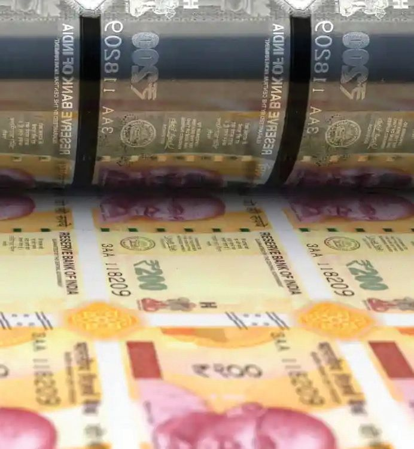
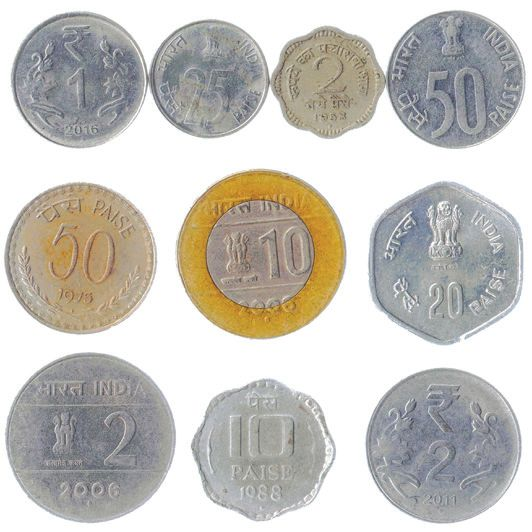

Money and
5 Economy
Have you ever thought how many exchanges of goods and services are taking
place in the economy every day? These exchanges of goods and services
between individuals, and between production units became easier with the
advent of money.
Anything accepted in the exchange of
goods and services can generally be
called money. It is money that made the
exchange of goods and services faster
and made specialization possible. For
example, rubber farmers are able to
focus solely on their production because
they can convert their product, which is
rubber, into money and use that money
to buy other goods and services he needs.
Fig 5.1
Forms of money change day by day but
we cannot think of an economy without
money. This is because money influences human life at different levels such
as consumers, producers, and suppliers. Banks play a major role in facilitating
the activities of money in the economy. Let's examine this in the context of the
functions of money.
Dad, the price of the pen
I bought today was ten
rupees and for pencil it
was seven rupees.
Mom, I bought a
birthday gift for my
friend with the money
you gave me.
Fig 5.2
Fig 5.4
Noomi's father sold the
land and the money was
deposited in the bank for
her higher education.
Fig 5.3
The vendor has promised
to give the money next
week for the paddy we
had supplied in the
market next week.
Fig 5.5
Observe the pictures. Picture 5.2 shows that money is used to buy
goods. Similarly, all the pictures show the various activities that
money does. Discuss with your friends and explain pictures 5.3,
5.4 and 5.5.
The above pictures indicate the various roles money plays in
the economy. Money helps people to buy and sell goods and
services, compare the prices of different goods and services,
store the value of savings and assets, and lend and borrow
money.
What were the transactions of goods and services using money in
your household in the past month? Prepare a list in consultation
with your parents.
General Functions of Money
Medium of Exchange: Goods and services can be sold for
money, and the money can be used to purchase the goods and
services that are needed. For example, labour can be supplied
and its reward can be received in the form of money. The same
money can be used to purchase goods and services. In this
way money is crucial for making countless transactions in the
economy.
Measure of value: The value of all goods can be expressed in
monetary terms. In the barter system, it was
not easy to compare the value of one good
with the value of another. Money made it
easy to compare the values of two goods. The
value of a good is the price that is assigned to
it in the transaction process.
Just as the value of good is measured in
monetary terms, the value of money can
also be expressed in terms of other goods.
The value of money is its purchasing
Fig 5.6
power. When the price of goods increases,
the purchasing power of money will decrease, and when the
price of goods decreases, the purchasing power of money
will increase. Changes in the purchasing power of money are
keenly felt when there is inflation or deflation in the economy.
Store of Value: When money became something that was
acceptable to everyone, it had become possible to store the
value of any good in the form of money. This was not possible
in the barter system. Through this it is possible to convert the
value of goods, including that of perishable items, into money
or asset and it can be used in the future.
Means of Deferred Payments: In the modern times many
business activities are carried out with ease because of the
advantage of settling the financial transactions at a later date.
Both buyers and sellers generally agree that the cash settlement
of the transactions of goods and services can be cleared later.
It is possible to measure the value of borrowing and lending
in the form of money. This is very helpful for short and longterm business transactions.
Characteristics of Money
A key characteristic of money is that it is generally recognised and
accepted. What other characteristics should money possess? Discuss
and complete the list.
Generally accepted
Durable
Write down the various functions of money.
How does money work in the economy?
It is money that moves the economy and speeds
up its functioning. Let's look at an example of how
it stimulates the economic activities of production,
distribution and consumption and strengthens the
economy by making the transactions faster.
Rice production is an economic activity in the
primary sector. A farmer who produces rice may
need fertilizers, seeds, pesticides, machinery, and
labour. When money is spent on fertilizers and
Fig 5.7
machinery, it becomes a source of income for the
producers in the industrial sector. When the rice producers
depend upon transportation facilities to get the rice to the
market, it becomes a source of income for service providers.
The money received as income by the industrial and service
sectors is pumped back into the economy. In this way, each
Standard X
currency spent in the economy changes hands again and
again. As the number of exchanges increase, the transactions
in the economy also increase.
My trail
I am a hundred rupee note. At 9 am today,
student took me to a shop and bought two
notebooks worth Rs. 50 each.
a
Using your imagination, complete my journey by writing down how
many transactions I would have undergone by 5 pm, fully utilising
my value. How many transactions have taken place in my journey
according to you? What is the total value of these transactions?
The number of times a unit of money is exchanged in a
given period of time is known as the velocity of circulation
of money. An increase in the velocity of circulation money
indicates an acceleration in economic growth, while a decrease
in the velocity of circulation money indicates a slowdown in
economic growth. In the economies where growth rate is high,
producers and consumers have more chances to spend money,
while in the economies where growth rate is low, producers
and consumers have limited chances to spend money.
As mentioned, banks and financial institutions play a major
role in facilitating money transactions and also in regulating
the economic activities. Every country has its own banking
system. Let's get acquainted with the banking system in India.
Money and the Central Bank
What is the source of currencies and coins in circulation in our
country? Who is the ultimate authority of all this money?
In each country, the respective central banks will be the ultimate
authority of this money. The Reserve Bank of India (RBI) is
106
Part 1
Page 107
Figure fig_ch05_p107_01 (Page 107)

Figure fig_ch05_p107_02 (Page 107)

Figure fig_ch05_p107_03 (Page 107)
Money and Economy
the central bank of India and it is headed by
its Governor. It was established on 1 April
1935 in Kolkata under the Reserve Bank of
India Act, 1934. In 1937, the headquarters of
the Reserve Bank was shifted to Mumbai. It
was nationalized in 1949.
The central bank regulates and coordinates
the activities of banks and non-banking
financial institutions in the economy. Let's
see the functions of the Reserve Bank of
India.
Fig 5.8
Functions of the Reserve Bank of India
Printing and Issuing Currency
As per the Reserve Bank of India Act
1934, only the Reserve Bank of India
has the power to print and issue all
currencies except coins and one rupee
notes. The coins and one rupee notes
are printed and issued by the Ministry
of Finance, Government of India. The
Reserve Bank of India is responsible
for designing,
incorporating the
security features, printing, and
Fig 5.9
distributing the currency. Currency
notes are printed at the Government
of India's printing presses at Nasik (Maharashtra) and
Dewas (Madhya Pradesh). It is also printed at two presses at
Mysore (Karnataka) and Salboni (West Bengal) by Bharatiya
Reserve Bank Note Mudran Limited (BRBNML), owned by
RBI. Coins are minted at the Government of India's mints
at Mumbai, Hyderabad, Kolkata and Noida. Based on the
government's instructions, the Reserve Bank of India can
withdraw the currency notes in circulation. This is known as
demonetization.
Demonetization
The most recent demonetization was implemented in India was effected on 8
November 2016. The aim was to prevent corruption, black money, terrorism, and
counterfeit currencies. The existing currency notes of Rs 500 and Rs 1,000 were
declared as no longer legal tender. New currency notes of Rs 500 and Rs 2,000 were
printed. The public had the opportunity to deposit old currency notes, without
declaration till 31 December 2016 in banks and with declaration till 31 March 2017
in the RBI.
Who prints one
rupee note
and coins?
Before 1835, the rupee,
coins and other forms
of money were used in
India.
There are historical
reasons why the
Government of India
prints one rupee note
and coins. The historical
convention of 1835
allowed the East India
Company, on the basis
of Paper Currency Act
of 1835, to print paper
currency in British
India. The intention was
to facilitate trade and
commerce. The Coinage
Act of 1906 and the
Coinage Act of 2011 gave
the central government
the power to mint coins.
The Government of India
retains this power and
therefore prints one rupee
note and coins.
Bankers' Bank
The Reserve Bank acts as the bankers' bank. It
provides emergency loans to banks in the times of
crisis, maintains the reserves of banks, and helps
to settle transactions between banks.
Controls the supply of money and credit
When the supply of money increases and the
production of goods and services does not increase
proportionately, there arises a situation where
there are fewer goods and services and more
money in the economy. This causes the prices
of goods and services to rise. An increase in the
general price level of goods and services is known
as inflation.
Inflation in India is measured using the Consumer
Price Index (CPI), which is prepared by the
National Statistical Office under the Ministry
of Statistics and Programme Implementation
(MOSPI).
Fig 5.10
108
Part 1
Page 109
Figure fig_ch05_p109_01 (Page 109)
Money and Economy
Find some news stories related to inflation and present
them before the class. List the causes mentioned in each
news story.
If inflation increases in the economy without any control,
it causes a decrease in the purchasing power of money. It
adversely affects economic growth and production. Therefore,
inflation must be controlled. One of the reasons behind
inflation is the increase in the quantity of money supply.
Inflation based on the General Consumer Price Index in August
2023 and September 2023 is given below.
August 2023
September 2023
Urban
Rural
Total
Urban
Rural
Total
India
7.02
6.59
6.83
5.33
4.65
5.02
Kerala
6.40
6.08
6.26
4.59
4.93
4.72
Source: Kerala Economic Review 2023
What was the change in inflation in September 2023 compared to the
inflation rate in August 2023?
Have you ever wondered what will be the total amount of
money in an economy? Wouldn't it be the total amount of
money held by the public and the money held by banks and
non-banking financial institutions in an economy?
The Reserve Bank sees the total amount of money in our
economy in the form of M1, M2, M3 and M4. Let's see what
they are.
M1 = Coins and currency notes held by the public and the savings deposits in
commercial banks
M2 = M1 + savings deposits in post office savings banks
M3 = M1 + net fixed deposits in commercial banks
M4 = M3 + total deposits in post offices (excluding National Savings Certificates)
where M1 and M2 are known as narrow money and M3 and M4 are known as
broad money.
Standard X
109
Page 110
Social Science II
Uncontrolled lending by banks leads to the increase in the
money supply in the economy and also inflation. This needs to
be controlled. RBI uses quantitative and qualitative measures
to control credit.
Credit Control Measures
Quantitative measures
Qualitative measures
Change in bank rates
Margin requirement
Change in reserve rates
Moral suasion
Open market operations
Repo Rate
Let's see how inflation is controlled by changing bank rates
and changing the reserve ratio, by RBI. The important bank
rates are the repo rate and the reverse repo.
The rate of interest
charged by the
Reserve Bank
of India on the
loans taken by
commercial banks
from the RBI.
For example when inflation increases unchecked, RBI
increases repo rate and reverse repo rate.
When RBI increases these rates, the commercial banks
also change these rates. When these rates are increased,
the money available with the commercial banks for
lending fall because at a higher rate of interest the
Reverse Repo Rate commercial banks will take less loans from RBI and
The rate of interest
deposit more in the RBI. In the same way the loan
given by the
taken by the public will also be less. So the money
Reserve Bank
available in the economy also would be less. When
of India on the
the rate of interest is high, people will prefer to save
deposits by the
more money rather than spend, because the reward
commercial banks.
for not consuming is greater. The money held by the
public flows to commercial banks and from there to the
Reserve Bank. The amount of money in the economy
decreases and the inflation comes under control.
The repo rates for different periods are given below
June
December
September
2022
2022
2023
4.90%
6.25%
6.50%
Find out the trend in the repo rate.
Discuss how the repo rate affected the credit and savings in the period
from June 2022 to December 2022.
Reserve Bank of India controls the
credit and supply of money by
changing the Cash Reserve Ratio
(CRR). This is the amount of money
the banks must keep as reserves
with the Reserve Bank out of the
money they receive as deposits.
When the reserve ratio decreases,
the amount of money available
with banks to lend increases and
the availability of credit increases.
This increases the money available
with the people. However, when
the reserve ratio increases, amount
of money available with banks to
lend will decrease. This reduces the
availability of credit and reduces the
amount of money people have.
Fig 5.11
Acts as the government's bank
The Reserve Bank of India is responsible
for maintaining government accounts,
providing banking services, and
implementing financial management. It
also advises the government on matters
such as fiscal and monetary policy.
Standard X
Fiscal policy
Fiscal policy is the policy regarding
taxation and government spending.
Monetary policy
Monetary policy is the policy
regarding the supply of money and
the rate of interest.
Visit the Reserve Bank of India website and find out the current
repo rate, reverse repo rate, and cash reserve ratio and present them
in the class.
Custodian of foreign exchange reserves
The foreign exchange reserves of our economy are the sum
total of foreign currencies and gold reserves. RBI is the
custodian of all these.
Fig 5.12
Publication of Reports
RBI publishes various reports at different periods such as
Banking Trends in India, Monetary Policy Reports, Consumer
Surveys, RBI Bulletin and Statistical Supplements.
Analyze the functions of the Reserve Bank and explain how it
regulates economic activities in India.
Banks and Non-Banking Financial Institutions
Banks and non-banking financial institutions are institutions
that provide financial services to individuals, organizations,
and businesses in the economy. Banks can be broadly classified
into commercial banks and cooperative banks.
While the operations of commercial banks are controlled by
shareholders, the ownership of cooperative banks is vested
with the members of the cooperative societies. Kerala Bank is
an example of a cooperative bank.
Commercial banks
Commercial banks are licensed by the RBI to provide banking
services and are included in the Second Schedule of the RBI Act,
1934. Public sector banks, private sector banks, small finance
banks, payment banks, specialized banks, regional rural
banks, and foreign banks are some examples of commercial
banks.
Fig 5.14
Commercial banks that were allowed to operate in India after
the financial reforms of the 1990s are known as new generation
banks. Examples include Axis Bank, Mahindra Bank, Yes Bank
and Indus Bank.
Find out which banks operate in your area and list the category they
fall into.
Standard X
113
Page 114
Social Science II
Functions of Commercial Banks
The main functions of commercial banks are to accept deposits
from the public and to provide loans. Banks act as a safe haven
for savings. They are able to convert the money deposited in
banks into various types of loans and make them available to
entrepreneurs.
Accepting Deposits
Let's get acquainted with the various types of deposit accounts
offered to the public by commercial banks.
Savings Deposit: This is a deposit that instills the habit of
saving in individuals and allows them to withdraw money
according to their needs. The depositor has the opportunity to
withdraw money from such deposits, subject to restrictions.
The number of times money can be withdrawn within a
period and the limit on the amount that can be withdrawn
varies from bank to bank. Banks often offer low interest rates
on savings deposits.
Current Deposit: A current account is an account intended
for business transactions. There is no limit to the number
of transactions that can be made from such accounts in a
single day. Banks do not pay interest on the money in this
account. Overdraft facility is provided for this account. An
overdraft is a system that allows you to withdraw more than
the amount in the current account within a predetermined
limit.
Term Deposit or Fixed Deposit Account: Money that is not
needed to be withdrawn immediately can be deposited in
such accounts. Banks pay more interest on such deposits than
on money in a savings bank account. If money is withdrawn
from these deposits before the maturity period, the interest
rate received by the depositors may be reduced. The interest
can be withdrawn upon maturity along with the deposits, or
at various periods determined by the depositor.
Recurring Deposits: Recurring deposits are deposits of a
fixed amount of money at regular intervals for a specific
period of time. Such deposits earn higher interest rates than
savings deposits. However, they are lower than the interest
rates on fixed deposits. At the end of the tenure,
the accumulated amount can be withdrawn
along with interest.
Why do banks offer higher interest
rates on fixed deposits than on savings
deposits?
Lending Loans
It is the Commercial banks that provide
various loans to individuals and institutions
for various financial activities. Commercial
banks act as intermediaries between depositors
and borrowers. Banks keep a portion of the
deposits received as reserves and lend the rest
to entrepreneurs. Commercial banks charge
interest on the various loans they provide to
their customers.
Anu and Manu are
students of Class 9. Anu
won a prize of Rs. 25,000
in a state-level elocution
competition. Manu
receives National Meritcum-Means Scholarship
of Rs. 12,000 every year
from Class 9 to 12. Both of
them want to deposit this
money in a bank for their
higher education. Which
bank accounts would
you suggest for Anu and
Manu to deposit this
money?
The interest rate charged to borrowers is higher
than the interest rate paid to depositors. The difference between
the interest paid to depositors and the interest charged
from borrowers is the income of banks. This is known as the
spread. Banks provide loans by accepting various collaterals.
They accept gold, land documents, salary certificates, etc. as
collateral.
Identify and prepare notes on various loans offered by commercial
banks.
Other functions
Providing various services
Commercial banks provide various banking services to the
public.
Credit Card ,Debit Card
ATM Services
Locker Facility
Visit three banks in your area and find out the rates they charge as
interest for various loans and complete the table.
Item
Home Loan
Bank Name
Bank Name
Bank Name
..................................
..................................
..................................
Agricultural Loan
Personal Loan
Identify the type of loan for which banks charge the lowest rate of
interest.
List the collateral that the banks accept for various loans.
How do commercial banks influence economic activity?
Banks and Technology
Technology is helpful in increasing the speed of transactions.
With the advent of mobile banking and online banking,
customers have been able to access various banking services
using smartphones and computers. Online banking is a system
where bank transactions are available through the internet.
Banking services that were available only at certain times
and days are now available 365 days a year, anywhere in the
world, due to the intervention of technology. Let's get
acquainted with some of the payment systems that have
emerged in the banking sector as a result of technology.
National Electronic Fund Transfer System (NEFT)
This is a system introduced by the Reserve Bank of India
to make bank transactions between account holders easier
and faster. Funds are transferred using the Indian Financial
System Code (IFSC).
Real Time Gross Settlement (RTGS)
RTGS is a system introduced by the RBI to transfer large
amounts of money between account holders. The feature
116
of this is that transactions can be completed in a very short
time.
Core Banking
Core banking is a system that enables an account holder
of a bank to carry out financial transactions from any of its
branches. There is no need to go to the specific branch where
the customer holds the account for the bank transactions. It is
convenient for the customers.
Universal Payment Interface (UPI)
UPI is a payment system developed by the National Payments
Corporation of India (NPCI). It enables real-time money
transfers between bank accounts. Users can connect their
various bank accounts through a mobile application and make
simple and secure transactions. Some of the popular UPI apps
are Google Pay, Paytm, Phone Pay, BIM UPI, and Amazon
Pay.
Fig 5.15
The use of cyber technology can help deliver personalized
services and reduce costs, but it also poses significant
challenges to security.
Organize an interview with a bank official to create awareness
about the possible frauds that can occur while using banking
services online and the steps we need to take against it. Prepare a
questionnaire for this purpose.
Non-banking financial institutions
These are financial institutions that operate in the banking
sector but perform only some of the functions of a bank.
Unlike banks, non-banking financial institutions cannot
accept savings and deposits from the public. Money cannot be
withdrawn by using cheques from such financial institutions.
Standard X
117
Page 118
Figure fig_ch05_p118_01 (Page 118)
Social Science II
KSFE
KSFE is a non-banking
financial company in Kerala.
It was established in 1969 to
provide financial services
to the people of Kerala. It
provides various services like
gold loans, personal loans,
business loans, vehicle loans,
housing loans, microfinance
and chits. through its various
branches. KSFE has a strong
presence in Kerala through
its network of branches and
the strong support of its
customers.
Non-banking financial institutions are
regulated by institutions such as the Reserve
Bank of India (RBI), Securities and Exchange
Board of India (SEBI), Insurance Regulatory
and Development Authority of India (IRDA),
and National Housing Bank (NHB).
Insurance companies (e.g. LIC, GIC),
mutual fund companies (e.g. UTI), and nonbanking financial institutions (e.g. KSFE)
are all examples of non-banking financial
institutions.
Sources of Credit in India
Entrepreneurs need money to start new
ventures, to expand existing ventures and to
enable firms to adopt new technologies. A
large percentage of this comes from banks and non-banking
financial institutions. Credit can be considered as the main
source for the financing of development activities. Sources
of credit in India can be classified into formal and informal
sources of credit. Formal sources of credit are the organized,
institutionalized and regulated systems. Informal sources of
credit are the unorganized and non-institutionalized systems.
The mutual coexistence and operational success of both are
necessary for the growth of the economy.
Find out the reason for the decrease in loan share from banks and
increase in loan share from SHGs during 2019-21.
Discuss the influence of local moneylenders on the credit system in
Kerala.
Credit Deposit Ratio
Credit Deposit Ratio measures the proportion of a bank's
deposits that are used for loans. It is monitored by the RBI.
A high credit deposit ratio indicates that banks have lent out
a large portion of the deposits they have received. But what
does a low credit deposit ratio indicate?
What are the different sources of credit in India?
Discuss in class how they function in the economy.
Standard X
119
Page 120
Figure fig_ch05_p120_01 (Page 120)
Social Science II
Credit deposit ratio in public sector banks in various states is
given.
States
March 2021
March 2022
March 2023
Andhra Pradesh
136.20
145.62
155.40
Assam
37.69
42.98
47.27
Tamil Nadu
103.05
99.76
104.79
Kerala
64.74
65.85
72.05
Panjab
44.56
43.68
41.92
Source: Kerala Economic Review 2023
Find out the reasons why the credit deposit ratio is high in some states
and low in others.
Examine the credit deposit ratio from March 2021 to March 2023.
Financial Inclusion
Have you noticed the steps taken by the country to bring
benefits of functioning of money and financial institutions to
everyone? Financial inclusion and inclusive economic growth
accelerate when banking services reach the common man, the
rural population and the marginalised people. Let's see what
steps the government has taken for this.
Nationalization of Banks
In order to bring the functioning of banks to different parts of
the country and to more people, 14 banks were nationalized
in 1969 and 6 banks, in 1980. The main objectives of bank
nationalization are given below.
To expand banking facilities in rural areas
To provide credit to farmers at lower rates
To ensure equitable distribution of credit
To prevent the concentration of economic power in a few
people.
120
Part 1
Page 121
Figure fig_ch05_p121_01 (Page 121)
Money and Economy
Co-operative Banking Systems
Co-operative banks play a crucial role in activating the
rural economy by providing banking facilities to villagers
and ordinary farmers. They operate on the principles of cooperation, self-help and mutual assistance. The objectives of
co-operative banks are to inculcate the habit of saving among
the villagers, to protect the common people from private
moneylenders, and to provide low-cost loans to farmers and
small businessmen.
Kerala Bank
The history of Kerala Bank starts with the registration of Thiruvananthapuram
Central Co-operative Bank in 1915 through the Travancore co-operative
society regulation act of His Highness Sree Moolam Thirunal in 1914. It started
functioning as a bank on 18 January 1916. It was included in the Second Schedule
of the Reserve Bank of India Act in July 1966. In 2019, the thirteen district cooperative banks of Kerala were merged into the Kerala State Co-operative Bank
and became known as Kerala Bank. Kerala Bank operates in all 14 districts of
Kerala with 823 branches.
The main objectives of Kerala Bank are to provide better banking services, ensure
financial inclusion and to accelerate the economic development of the state.
Social commitment, rural development and providing support to the marginalized
community are also the objectives of the bank. 40% of the bank's shares are held by
the Government of Kerala, 30% by District Co-operative Bank and 30% by others.
Kerala Bank provides many banking services to its beneficiaries. This includes
accepting deposits, providing loans and making other monetary transactions. The
bank provides many facilities to its customers with ATM services across Kerala,
modern banking technology and digital platform.
Microfinance
Microfinance aims to provide financial services to low-income
individuals, families, and businesses who do not have access
to conventional banking services.
Poverty alleviation, empowerment of women and the
marginalized, promotion of entrepreneurship and ensuring
job creation, and improvement of quality of life are all goals
set by microfinance.
The Grameen Bank, founded by Professor Muhammad Yunus
in Bangladesh in 1983, is a good example of microfinance.
Kudumbashree in Kerala works on the concept of
microfinance. The work done by Kudumbashree in Kerala for
poverty alleviation and women empowerment has repeatedly
attracted world attention. These systems work by accepting
small deposits through Neighborhood Groups and Self Help
Groups (NHGS, SHGS) and by providing loans as per the
need.
Jan Dhan Account
The Prime Minister Jan Dhan Account is a scheme to open an
account for all those who do not have a bank account in the
country. Its aim is to bring all the people of the country under
the ambit of banking services. Zero minimum balance account
is the special feature of this scheme. It also aims to provide
financial services to the low-income group, promote financial
literacy and inculcate the banking habit.
Digital currency has been the latest trend in financial
transactions. The government is also promoting Aadhaarbased payment system, e-wallet and National Finance Switch
to reduce the use of physical currencies and increase the use of
digital currencies, thus moving towards a cashless economy.
Fig 5.16
What are the steps the government has taken to promote financial
inclusion?
122
Part 1
Page 123
Figure fig_ch05_p123_01 (Page 123)
Money and Economy
Money plays a vital role in enabling the economic activities of
production, consumption and distribution. As money turned
digital, the number and magnitude of the transactions also
increased. New currencies are emerging, keeping in with the
changes in the world order. Money channelled into the market
for consumption goes directly to producers and distributors
while money set aside for saving goes to the entrepreneurs
as loans through banks and non-banking financial
institutions. Banks and non-banking financial institutions
play a significant role in accelerating economic growth rate
by promoting transactions. The proliferation and use of
technology has promoted cashless transactions and succeeded
in bringing those remote areas that have hither to no access to
banks into the banking network.
Extended Activities
1. Visit the website of Reserve Bank of India and prepare a class report on its
various publications
2. Visit a commercial bank in your area and understand their various activities
and services provided. Prepare a chart showing the credit deposit ratio,
various loans and deposits and their interest rates.
3. Visit a production unit and prepare a report containing the following
information.
Operating sector (primary, secondary or tertiary)
Services provided by the bank to this production unit
Relation with other sectors
CONSTITUTION OF INDIA
Part IV A
FUNDAMENTAL DUTIES OF CITIZENS
ARTICLE 51 A
Fundamental Duties- It shall be the duty of every citizen of India:
(a) to abide by the Constitution and respect its ideals and institutions,
the National Flag and the National Anthem;
(b) to cherish and follow the noble ideals which inspired our national struggle
for freedom;
(c) to uphold and protect the sovereignty, unity and integrity of India;
(d) to defend the country and render national service when called upon to do so;
(e) to promote harmony and the spirit of common brotherhood amongst all the
people of India transcending religious, linguistic and regional or sectional
diversities; to renounce practices derogatory to the dignity of women;
(f) to value and preserve the rich heritage of our composite culture;
(g) to protect and improve the natural environment including forests, lakes, rivers,
wild life and to have compassion for living creatures;
(h) to develop the scientific temper, humanism and the spirit of inquiry and reform;
(i)
to safeguard public property and to abjure violence;
(j) to strive towards excellence in all spheres of individual and collective activity
so that the nation constantly rises to higher levels of endeavour and
achievements;
(k) who is a parent or guardian to provide opportunities for education to his child or,
as the case may be, ward between age of six and fourteen years.